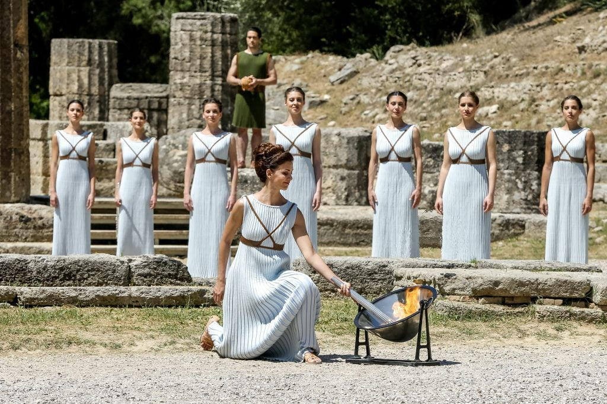
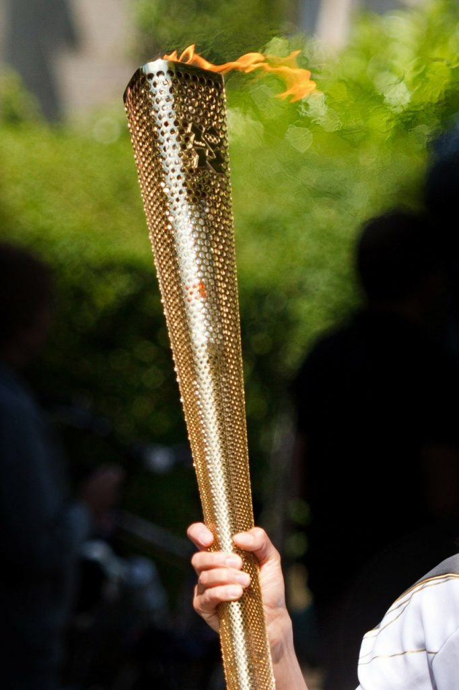
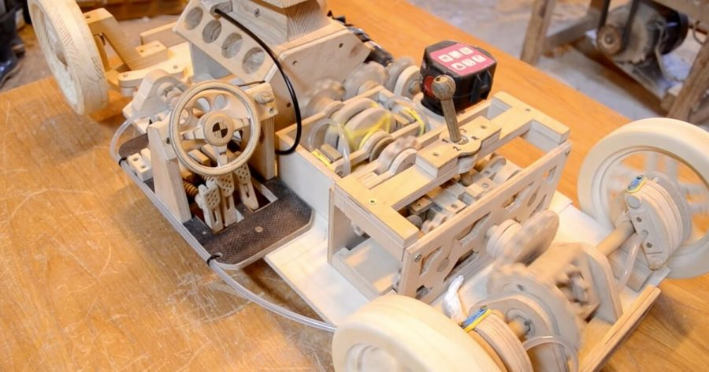

ဒါတွေအားလုံး ဂျာမန်အာဏာရှင် ဟစ်တလာက စခဲ့တာပါ
ဟုတ်ပါတယ်။ အိုလံပီယာက မီးကို မီးရှူးတိုင်နဲ့ မီးမငြိမ်းအောင် အဆင့်ဆင့် မီးကူးပြီး အိုလံပစ် ဖွင့်ပွဲကျင်းပတဲ့ အားကစားကွင်းဆီ စသယ်ခဲ့တာ ဟစ်တလာက စခဲ့တာပါ။ သူ့အရင် အိုလံပစ်တွေမှာ ဒီလို မီးကူးသယ်ဆောင်တာမျိုး မရှိခဲ့ပါဘူး။ ၁၉၃၆ ခုနှစ် ဘာလင် အိုလံပစ် လုပ်တော့ တတိယ ဂျာမနီနိုင်ငံတော် ထူထောင်ဖို့ စိတ်ကူးယဉ်နေတဲ့ ဟစ်တလာက ဒီအိုလံပစ်ပွဲကို သူများနဲ့မတူ တမူထူးခြားအောင် လုပ်ချင်ပါတယ်။ ရာဇဝင်မှာ ထင်ရှား ကျော်ကြားခဲ့တဲ့ ရှေးဂရိခေတ်နဲ့ ခေတ်သစ် တတိယ ဂျာမနီ နိုင်ငံတော်ကြီးကိုလဲ ပေါင်းကူးဆက်စပ် ခြင်နေပါတယ်။ ဒါ့ကြောင့် ဒီကိစ္စကို စီမံဖို့ ဂျာမနီနိုင်ငံတော် အားကစား ဝန်ကြီးဌာနကို တာဝန်ပေးလိုက်ပါတယ်။ အားကစားဝန်ကြီးက ရှေးခေတ် အိုလံပစ် အားကစားပွဲတွေ ကျင်းပရာ ဂရိနိုင်ငံ အိုလံပီယာ အားကစားကွင်းကြီးထဲက ထွန်းညှိလာတဲ့ အိုလံပစ်မီးရှူးကို ဘာလင်အိုလံပစ် ကွင်းအရောက် အခမ်းအနားနဲ့ သယ်ဆောင်ဖို့ စီစဉ်ပါတော့တယ်။မူလပထမဆုံး အိုလံပစ် မီမီရှူးတိုင်ကို ဂျာမန်ကုမ္ပဏီကြီးဖြစ်တဲ့ ခရပ် (Krupp) ကို တာဝန် ပေးခဲ့ပါတယ်။ ဒီကုမ္ပဏီဟာ နောင်ဒုတိယ ကမ္ဘာစစ်ကြီး ဖြစ်တဲ့အခါ ဂျာမန် တပ်မတော်အတွက် အမြှောက်တွေ ထုတ်လုပ်တဲ့ ကုမ္ပဏီ ဖြစ်လာပါတယ်။ ဒီပထမဆုံး အိုလံပစ် မီးရှူးတိုင်ရဲ့ ဒီဇိုင်းက ရိုးရိုးရှင်းရှင်းလေးပါ (အောက်ကပုံမှာ ကြည့်ပါ)။ အဓိကကတော့ အိုလံပီယာက ထွန်းညှိလာတဲ့ အိုလံပစ်မီး မငြိမ်းပဲ ဘာလင်ကို ရောက်ရှိဖို့ပဲ ဖြစ်ပါတယ်။ ဒီ ၁၉၃၆ ခုနှစ်ကစလို့ အခုထိ အိုလံပစ် မီးရှူးတိုင် အားလုံးရဲ့ အဓိက ဦးတည်ချက်ကတော့ အိုလံပီယာက ထွန်းညှိလာတဲ့ မီး မငြိမ်းပဲ အိုလံပစ် အားကစားပွဲ ကျင်းပရာ ကစားကွင်းထဲကို ရောက်ရှိဖို့ပါပဲ။ မီးရှူးတိုင်ရဲ့ ဒီဇိုင်းကသာ တစ်နှစ်ပြီး တစ်နှစ် ပြောင်းသွားတယ်၊ ဒီရည်မှန်းချက်ကတော့ မပြောင်းပါဘူး။ တစ်နှစ်ထက် တစ်နှစ် ပိုပြီးကောင်းအောင်သာ ပြုပြင်လာခဲ့တာပါ။


အိုလံပစ်မီးကို မှန်နဲ့ မီးရှို့တာပါ
အိုလံပစ် မီးတောက်ကို ဂက်စ်မီးခြစ်တို့၊ ယမ်းမီးခြစ်တို့နဲ့ မီးညှိတာ မဟုတ်ပါဘူး။ အိုလံပစ်မီးတောက်ကို ဂရိနိုင်ငံ အိုလံပီယာက ဟီရာနတ်ဘုရားကျောင်းကြီးထဲမှာ ရှေးဂရိ နတ်နန်းထိန်း အပျိုတော်တွေလို ဝတ်စားထားတဲ့ ဂရိအမျိုးသမီးငယ်တွေက နေရောင်ပြန် အလင်းစုမှန်နဲ့ မီးညှိတာပါ။ ဒီအလင်းစုမှန်ဟာ နေကလာတဲ့ အလင်းရောင်ကို တစ်နေရာထဲမှာ စုပေးပါတယ်။ ကျွန်တော်တို့ ငယ်ငယ်က မှန်ဘီလူးနဲ့ သစ်ရွက်ချောက်လေးတွေ မီးရှို့သလိုပေါ့။ ဒါဟာ ရှေးဂရိပြည်မှာ မီးထွန်းညှိတဲ့ ဓလေ့ကို ရည်ညွှန်းပြီး ရှေးမူမပျက် ထွန်းညှိတာ ဖြစ်ပါတယ်။ နတ်နန်းထိန်းအပျိုတော် အမျိုးသမီးဟာ မီးရှူးတိုင်ကို ဒီအလင်းစုမှန်ရဲ့ အလင်းစုတဲ့ နေရာမှာ မီးတောက်သည်အထိ ထားပြီး မီးထွန်းညှိတာ ဖြစ်ပါတယ်။ (အောက်က ဗီဒီယိုမှာ အလင်းစုမှန်နဲ့ မီးညှိတာ မြင်နိုင်ပါတယ်)။ ဒီမီးညှိတဲ့ အခမ်းအနားကို ဂရိနိုင်ငံ အိုလံပီယာက ဟီရာ နတ်ကျောင်းတော်မှာသာ အမြဲ ကျင်းပပါတယ်။ ပြီးတော့မှ ဒီမီးတောက်ကို တစ်ယောက်ပြီး တစ်ယောက် ဆင့်ပွားလို့ ယူဆောင်တာပါ။ မီးတိုင်တစ်ချောင်းထဲ သယ်လာတာ မဟုတ်ပါဘူး။ တစ်ချောင်းကနေ တစ်ချောင်းကို မီးပွားပြီး (ဖယောင်းတိုင် မီပွားသလိုမျိုး) သယ်ဆောင်တာပါ။ဒီလို အရန်မီးတောက် ဆောင်ထားတာ မီးညှိပွဲ အခမ်းအနား တစ်ခုထဲအတွက် မဟုတ်ပါဘူး။ အိုလံပီယာက မီးညှိလာတဲ့ မူလမီးတောက်ကနေ ဆင့်ပွားပြီး မီးအိမ်နဲ့ ထွန်းထားတဲ့ မီးကိုလဲ အခမ်းအနားနဲ့ သယ်ဆောင်လာတဲ့ မီးတိုင်နဲ့အတူ သယ်ဆောင်လာပါတယ်။ အကြောင်းကြောင်းကြောင့် မီးတိုင်ငြိမ်းသွားခဲ့ရင် အဲ့သည် အရန်မီးကနေ ပြန်ကူးပါတယ်။ ဒါ့ကြောင့် လမ်းမှာ မီးငြိမ်းသွားရင်တောင် နောက်ဆုံး အားကစား ကွင်းကြီးထဲ ထွန်းတဲ့မီးဟာ မူလက ထွန်းညှိလာတဲ့ အိုလံပီယာမီးပဲ ဖြစ်နေပါတယ်။
မီးတိုင်တစ်ခုဟာ မိနစ် ၂၀ ပဲ မီးတောက်လောင်ပါတယ်
ဟုတ်ပါတယ်၊ မီးတိုင်တစ်တိုင်ဟာ မိနစ် ၂၀ ပဲ လောင်ပါတယ်။ မီးတိုင်မှာ ပါတဲ့ လောင်စာက မီးတိုင်သေးသေးလေး ဆိုတော့ ဒီလောက်ပဲ ဆံ့ပါတယ်။ ဒီ မိနစ် ၂၀ အတွင်းမှာ နောက်မီးတိုင်တစ်တိုင်ကို မီးကူးရတာပါ။ အကယ်လို့ အကြောင်းကြောင်းကြောင့် လမ်းမှာ နောက်ကျနေမယ် ဆိုရင် မီးမငြိမ်းအောင်တော့ ပိုပိုလိုလို လောင်စာနဲနဲတော့ ထပ်ဆောင်းထည့်ထားပါတယ်။ ဒါပေမယ့် ဒီမိနစ် ၂၀ လောက် အတွင်းမှာ မီးမကူနိုင်ရင် မီးသေသွားပါမယ်။ခုခေတ်မီးတိုင်တွေမှာ မီးစာအရည်ကိုသုံးတော့ မီးငြိမ်းသွားရင် အလိုလို မီးပြန်ညှိပေး နိုင်ပါတယ်
၁၉၇၂ မြူးနစ်အိုလံပစ်မှာ မီးတိုင်အတွက် မီးစာအရည်ကို စတင်သုံးစွဲပါတယ်။ ဂက်စ်မီးခြစ်မှာ ထည့်တည် လောင်စာအရည်မျိုးပါ။ ဒီမီးစာအရည်ဟာ ထွက်လာတဲ့ မီးတောက်ရဲ့ အရောင်ကို လိုခြင်တဲ့ အရောင်ဖြစ်အောင် ပြောင်းပေးလို့ ရပါတယ်။ နောက်ပြီး ဒီမီးတိုင်ရဲ့ အတွင်းထဲမှာ မီးတောက်အသေးလေး တစ်ခုကိုလဲ လေကာမိုးကာ သယ်ဆောင်ထားပါတယ်။ ဒါ့ကြောင့် အပြင်က မီး မိုးရွာလို့ပဲ ဖြစ်ဖြစ်၊ လေတိုက်လို့ပဲဖြစ်ဖြစ် ငြိမ်းသွားရင်တောင် အတွင်းက မူလမီးတောက်ကနေ မီးပြန်ညှိပေးပါတယ်။ ဒီမီးတိုင်ကို ထွင်တဲ့အဖွဲ့ဟာ ဒီမီးတိုင် နမူနာကို ရချိုးခန်းထဲက ရေပန်းထဲထိ ယူသွားပြီး စမ်းသပ်ထားတာလို့ ဆိုပါတယ်။ ဘယ်လောက် မိုးရွာရွာ၊ လေတိုက်တိုက် မီးမငြိမ်းနိုင်ဘူးလို့ ဆိုပါတယ်။
နောက်ဆုံး ကွင်းထဲက မီးရှူးတိုင်ကြီးကို မီးညှိပေးတဲ့ မီးတိုင်ဟာ လမ်းမှာ သယ်လာတဲ့ မီးတိုင်တွေထက် ထူးခြားပါတယ်
နောက်ဆုံးကွင်းထဲ ဝင်လာတဲ့ အချိန်မှာ မီးတိုင်က မီးတောက်ကို ကွင်းထဲက လူတိုင်းမြင်နိုင်ဖို့ လိုအပ်ပါတယ်။ ဒါ့ကြောင့် ဒီမီးတိုင်ကို တခြားမီးတိုင်တွေက မီးတောက်နဲ့ မတူပဲ တမူထူးခြားအောင် ဖန်တီးထားပါတယ်။ အချို့ပွဲတွေမှာ မီးခိုးတွေ အူထွက်နေအောင် ဖန်တီးထားပြီး၊ အချို့ကတော့ မီးတောက်ပိုတောက်အောင်၊ ဒါမှမဟုတ် ထူးခြားတဲ့ အရောင်ထွက်အောင် လုပ်ကြပါတယ်။၁၉၅၆ ဩစတြေးလျနိုင်ငံ မဲလ်ဘုန်းက အိုလံပစ်မှာ မီးတိုင်က မီးအထွက်ကောင်းအောင် ဆိုပြီး မက်ဂနီဆီယမ်းနဲ့ အလူမီနီယံတွေ ရောပြီး မီးရှို့ကြပါတယ်။ မီးကတော့ အလွန်လှပစွာ တောက်လောင်ပါတယ်။ ဒါပေမယ့် မီးတိုင်သယ်တဲ့ အားကစား သမားကတော့ လက်မှာ မီးလောင်လို့ ဆေးရုံရောက်သွားပါတယ်။
ဘယ်လို အခက်အခဲတွေပဲရှိရှိ အိုလံပစ်ကွင်းကြီးထဲမှာ နောက်ဆုံးထွန်းညှိလိုက်တဲ့ မီးတောက်ဟာ မူလ အိုလံပီးယာက ဟီရာကျောင်းတော်ကြီးမှာ ညှိလာတဲ့ မီးတောက်ကတဆင့် ကူးလာတဲ့ မီးပါပဲ။ ဒီလိုဖြစ်အောင်လဲ အင်ဂျင်နီယာတွေ ခက်ခက်ခဲခဲ ကြိုးစားထားရတာပါ။
MakFish | Pixabay
Source: Popular Science | The strange history of the Olympic Torch—and why it has to stay lit